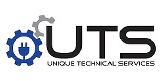
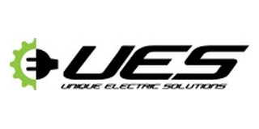
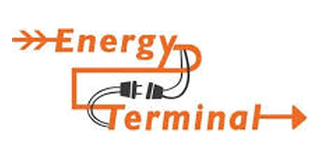
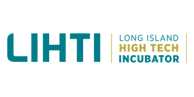

Experience
Work and programs
Designing, integrating and documenting electric vehicles since 2024, from conversion builds to production trucks, plus clean energy fellowships focused on hydrogen and customer discovery.

Mechanical Engineer, Unique Technical Services
Design
- Design custom fabricated sheet metal components for EV applications, with detailed drawings and hole placement for component mounting.
- Develop junction box layouts, planning wire routing and component placement for serviceability and clean installation.
- Produce harness drawings that technicians use directly for fabrication and installation.
- Executed an engineering change integrating 3 onboard chargers into a vehicle platform: harness additions, charger placement, AC distribution box changes, and wire and terminal block counts.
- Designed a 12V distribution layout, including busbar updates and terminal placement, and coordinated its release for sourcing.
Build and test
- Performed cabin-to-chassis integration on EV builds: connected air lines, ran electrical tests, verified charging and confirmed core vehicle functions.
- Built harnesses for direct client shipment.
Software and automation
- Built a Python tool that pulls from Odoo BOMs and the part-number database to auto-generate costed BOMs, centralizing BOM creation by assembly part number, and recorded training videos so the engineering team could adopt it.
- Updated a Python application that converts SolidWorks mechanical circuit summaries into wire-machine-ready output.
Documentation, quality and procurement
- Wrote complete vehicle assembly instructions for EV truck builds (tools, torque specs, charging procedure, photos), plus instructional slideshows for wire installation and routing.
- Authored the SOP for wire machine maintenance and troubleshooting.
- Completed ISO 9001:2015 Internal Audit Training and began bringing quality management practices into company processes.
- Handle procurement for projects: work directly with vendors, place orders, find the lowest-cost options and track down hard-to-find parts, weighing price against lead time.
- Marked up electrical schematics for EE team design updates, and completed foundational Altium PCB design work ahead of board development.

Senior Intern, Unique Electric Solutions
Design
- Produced flat harness drawings and matching 3D CAD reference models that technicians used directly to build and install harnesses across 15+ EV conversion builds.
- Redesigned legacy SolidWorks drawings with the ME team, converting bent sheet metal parts to welded assemblies and writing new drawings and welding instructions, reducing EV costs by $10K.
- Created mechanical drawings for custom sheet metal components, with dimensioning and fabrication specs.
- Designed sub-assembly layouts for electrical junction boxes, coordinating fit between wiring, enclosure and mounting constraints.
- Took field measurements and selected a driveshaft for a vehicle application based on fit and vendor specifications.
Keeping design, production and purchasing in sync
- Kept SolidWorks models, electrical schematics and procurement/BOM data synchronized to prevent design-to-production mismatches.
- Wrote part descriptions and assigned part numbers to standardize component identification across the vehicle BOM.
- Wrote installation documentation defining build sequencing across subsystems, including interactive eDrawings with embedded BOMs that let technicians click a part to identify it.
- Authored SOPs for QC stations and supported ECN execution using Lean principles.
- Handled much of the procurement for conversion projects: worked with vendors, placed orders, found the lowest-cost options and tracked down hard-to-find parts, weighing price against lead time.
On the floor
- Investigated and resolved recurring electrical and mechanical issues across the conversion fleet.
- Supported vehicle commissioning, including fuse installation and helping the EE team during system testing.
- Mentored about 10 incoming interns on SolidWorks workflows and onboarding.
Programs and fellowships

Cohort Member, Energy Terminal Emerging Leaders Program
- Took part in weekly sessions with experts from leading global energy companies, building a network with industry experts and peers.
- Used MIT En-ROADS to build a low-emissions climate scenario by adjusting key policy and technology parameters.

Sr. Clean Energy Tech Transfer Fellow, LIHTI
- Researched clean energy patents with a focus on green hydrogen production, identifying key innovations and opportunities for advancement.
- Spoke with 50+ experts in the hydrogen space about industry pain points and growth prospects, building a working picture of global hydrogen benchmarks and developments.
- Completed the NY I-Corps Hub × Gotham Innovation Gambit regional I-Corps Lean Bootcamp, running 20 customer discovery interviews in three weeks (see the project).
- Developed proof-of-concept plans for two patented technologies, outlining the development process and strategies to raise their Technology Readiness Level.
- Helped build the CETX program's second cohort: recruitment strategy and outreach, the SBU job fair and an information session for prospective fellows. Selected 4 trainees to advance to full Fellows.